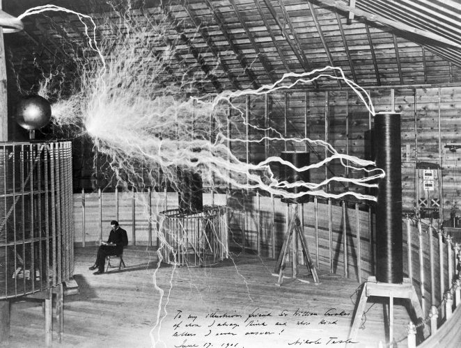

Nikola Tesla
The man who revolusionised electricity

Here's a timeline of Nikola Tesla's life:
- 1856 - Born in Smiljan, Austrian Empire (modern-day Croatia).
- 1870-80s- Studied engineering and physics without receiving a degree, gaining practical experience working in telephony and at Continental Edison in the new electric power industry.
- 1884 - Emigrated to the United States, where he became a naturalized citizen. He worked for a short time at the Edison Machine Works in New York City before he struck out on his own. With the help of partners to finance and market his ideas, Tesla set up laboratories and companies in New York to develop a range of electrical and mechanical devices.
- 1888 - His alternating current (AC) induction motor and related polyphase AC patents, licensed by Westinghouse Electric, earned him a considerable amount of money and became the cornerstone of the polyphase system which that company eventually marketed.
- 1890s- Pursued his ideas for wireless lighting and worldwide wireless electric power distribution in his high-voltage, high-frequency power experiments in New York and Colorado Springs.
- 1893- He made pronouncements on the possibility of wireless communication with his devices. Tesla tried to put these ideas to practical use in his unfinished Wardenclyffe Tower project, an intercontinental wireless communication and power transmitter, but ran out of funding before he could complete it.
- 1910s- After Wardenclyffe, Tesla experimented with a series of inventions with varying degrees of success. Having spent most of his money, Tesla lived in a series of New York hotels, leaving behind unpaid bills.
- 1943 - Dies at age 86.
- 1960 - Tesla's work fell into relative obscurity following his death, until this year, when the General Conference on Weights and Measures named the SI unit of magnetic flux density the tesla in his honor.
- 1990s - There has been a resurgence in popular interest in Tesla.